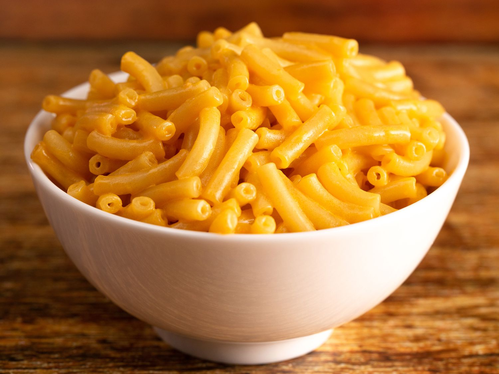

Mac n Cheese
Cheesy noodle dish, perfect for an easy mid-day meal.
Ingredients
- Shell or elbow noodles.
- A cheese of your choosing.
- Butter.
- Milk.
Directions
- Boil noodles in a pan of water for 7-9 minutes.
- Melt your cheese either on stovetop, in the oven, or in a heat-safe bowl in the microwave.
- Strain waters from noodles, do not rinse the noodles.
- Add a spoonful of butter.
- Pour in a bit of milk.
- Pour in your cheese and stir until noodles are consistently cheesy.